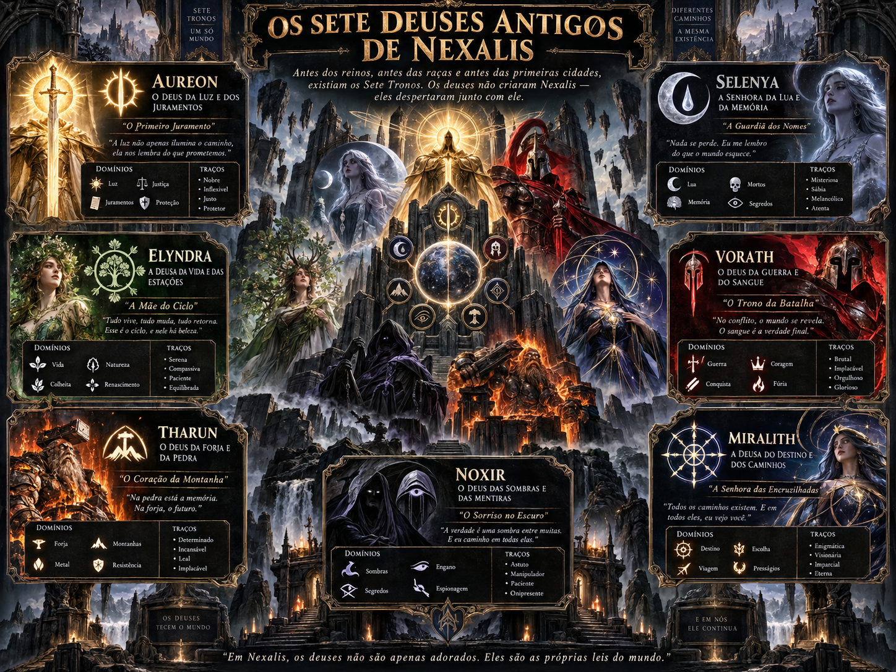

Panteão dos Deuses
Um arquivo dedicado às divindades, separado das criaturas comuns, chefes e NPCs. Navegue por mitologia, consulte os domínios e abra a arte original. Os deuses de Nexalis pertencem ao universo do RPG; as mitologias grega e nórdica são referências tradicionais, não personagens automaticamente introduzidos na campanha.
Os sete deuses antigos

Existe no acervo uma arte coletiva dos sete deuses antigos de Nexalis. Por enquanto, seis divindades têm retratos individuais identificados; o arquivo não identifica nominalmente a sétima. Ela não recebeu nome, poderes ou ficha inventados.
Níveis, PV e ataques divinos ainda não foram definidos pelo material do RPG. A ausência dessas fichas evita apresentar valores fictícios como regras oficiais.